ENGINE ASSEMBLY > INSTALLATION |
| 1. INSTALL ENGINE HANGER |
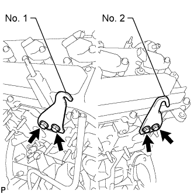 |
Install 2 engine hangers with 4 bolts as shown in the illustration.
| Item | Part No. |
| No. 1 engine hanger | 12281-31070 |
| No. 2 engine hanger | 12282-31050 |
| Bolt | 90119-08A87 |
| 2. REMOVE ENGINE STAND |
Attach an engine sling device and hang the engine with a chain block.
Lift the engine, and remove it from the engine stand.
Place the engine onto a work bench.
| 3. INSTALL ENGINE ASSEMBLY |
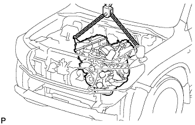 |
Attach an engine sling device and hang the engine with a chain block.
Slowly lower the engine into the engine compartment.
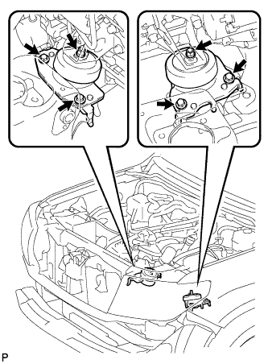 |
Install the front engine mounting insulator LH with the 2 bolts and nut.
Install the front engine mounting insulator RH with the 2 bolts and nut.
Remove the 2 engine hangers and 4 bolts.
| 4. INSTALL DRIVE PLATE AND RING GEAR SUB-ASSEMBLY (for Automatic Transmission) |
 |
Using SST, hold the crankshaft.
Temporarily install the front spacer, drive plate and rear spacer with the 8 bolts.
 |
Tighten the 8 bolts uniformly in several steps in the order shown in the illustration.
| 5. INSTALL FLYWHEEL SUB-ASSEMBLY (for Manual Transmission) |
|
Using SST, hold the crankshaft.
Temporarily install the flywheel with the 8 bolts.
 |
Install and tighten the 8 mounting bolts uniformly in several steps.
| 6. INSTALL CLUTCH DISC ASSEMBLY (for Manual Transmission) |
 |
Insert SST into the clutch disc, then insert the clutch disc into the flywheel.
| 7. INSTALL CLUTCH COVER ASSEMBLY (for Manual Transmission) |
 |
Align the matchmark on the clutch cover with the one on the flywheel.
In the order shown in the illustration, temporarily install the 6 bolts starting from the bolt located near the knock pin on the top.
Check that the disc is in the center by lightly moving SST up and down, and left and right.
Evenly tighten the bolts by following the order shown in the illustration.
| 8. INSPECT AND ADJUST CLUTCH COVER ASSEMBLY (for Manual Transmission) |
 |
Using a dial indicator with a roller instrument, check the diaphragm spring tip alignment.
 |
If the alignment is not as specified, adjust the diaphragm spring tip alignment using SST.
| 9. CONNECT NO. 1 OIL COOLER HOSE TUBE SUB-ASSEMBLY |
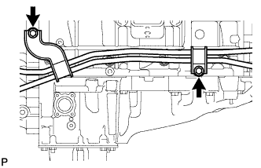 |
Connect the cooler hose tube with the 2 bolts.
| 10. INSTALL REAR NO. 1 ENGINE MOUNTING INSULATOR |
 |
Install the rear engine mounting insulator to the transmission with the 4 bolts.
| 11. INSTALL MANUAL TRANSMISSION ASSEMBLY (for Manual Transmission) |
Install the manual transmission to the vehicle (Click here).
| 12. INSTALL AUTOMATIC TRANSMISSION ASSEMBLY (for Automatic Transmission) |
Install the automatic transmission to the vehicle (Click here).
| 13. CONNECT NO. 1 AND NO. 2 FUEL PIPE |
Connect the No. 1 and No. 2 fuel pipe.
Check that there is no damage or contamination in the connector part of the pipe.
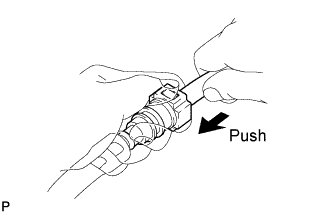 |
Align the axis of the connector with the axis of the pipe. Push the pipe into the connector until the connector makes a "click" sound. If the connection is tight, apply a small amount of fresh engine oil on the tip of the pipe.
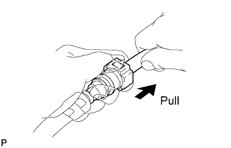 |
After having finished the connection, try to pull apart the pipe and the connector and confirm that they are securely connected.
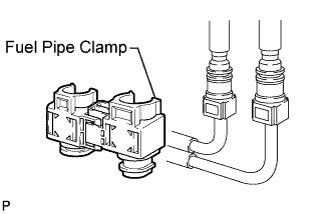 |
Install the fuel pipe clamp to the connector.
| 14. CONNECT COOLER COMPRESSOR ASSEMBLY |
Fix the cooler compressor in place with the stud bolt.
 |
Install the cooler compressor with the nut and 3 bolts in several steps in the sequence shown in the illustration.
Connect the cooler compressor connector.
| 15. INSTALL GENERATOR ASSEMBLY |
 |
Install the generator with the 2 bolts.
 |
Connect the wire harness clamp bracket with the bolt.
Install the wire harness clamp to the bracket.
Connect the generator wire with the nut.
Install the terminal cap.
Connect the generator connector.
 |
Connect the wire harness clamp bracket with the nut.
| 16. INSTALL BATTERY |
| 17. CONNECT VANE PUMP ASSEMBLY |
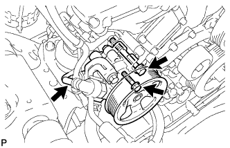 |
Connect the vane pump with the 2 bolts.
Connect the power steering oil pressure switch connector.
| 18. CONNECT WATER HOSE SUB-ASSEMBLY |
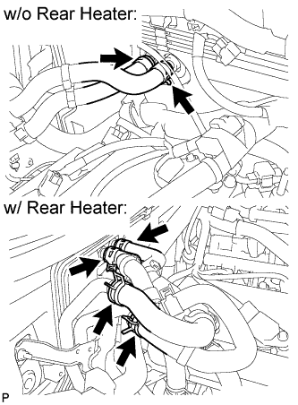 |
Connect the water hoses.
| 19. INSTALL EXHAUST MANIFOLD SUB-ASSEMBLY LH |
 |
Set a new gasket to the cylinder head LH with the oval shape facing rearward.
 |
Install the exhaust manifold with 6 new nuts.
Connect the air fuel ratio sensor connector.
| 20. INSTALL NO. 2 MANIFOLD STAY |
 |
Install the No. 2 manifold stay with the 3 bolts.
| 21. INSTALL EXHAUST MANIFOLD SUB-ASSEMBLY RH |
 |
Set a new gasket to the cylinder head RH with the oval shape facing forward.
 |
Install the exhaust manifold with 6 new nuts.
Connect the air fuel ratio sensor connector.
| 22. INSTALL MANIFOLD STAY |
 |
Install the No. 1 manifold stay with the 3 bolts.
| 23. INSTALL FRONT FENDER APRON SEAL LH |
 |
Install the fender apron seal with the 4 clips.
| 24. INSTALL FRONT FENDER APRON SEAL REAR LH |
 |
Install the fender apron seal with the 4 clips.
| 25. INSTALL FRONT FENDER APRON SEAL FRONT RH |
 |
Install the fender apron seal with the 3 clips.
| 26. INSTALL FRONT FENDER APRON SEAL REAR RH |
 |
Install the fender apron seal with the 4 clips.
| 27. INSTALL FRONT EXHAUST PIPE ASSEMBLY |
Install a new gasket and the front exhaust pipe to the exhaust manifold RH with 2 new nuts.
Connect the heated oxygen sensor connector.
| 28. INSTALL FRONT NO. 2 EXHAUST PIPE ASSEMBLY |
Install a new gasket and the front No. 2 exhaust pipe to the exhaust manifold LH with 2 new nuts.
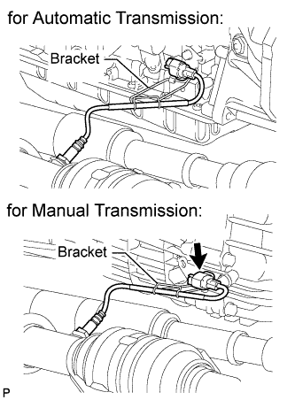 |
Connect the heated oxygen sensor connector.
| 29. CONNECT ENGINE WIRE |
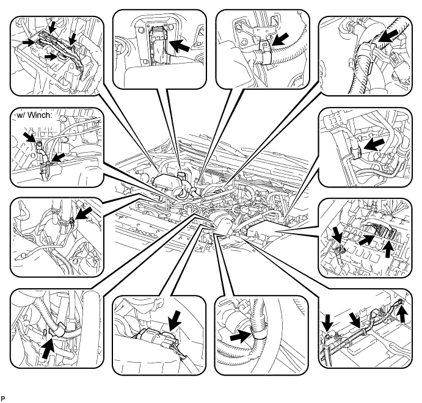
Install the ground cable with the bolt and attach the wire harness clamp.
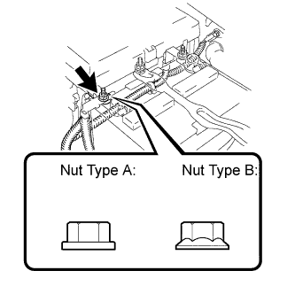 |
Install the battery positive cable with the nut.
Connect the battery positive cable cover.
Install the 2 ground cables with the 2 bolts.
Attach the wire harness clamp to the hose.
Attach the wire harness clamp to the body.
Attach the engine wire to wire connector clamp to the engine room relay block side, and connect the connector.
Connect the wire harness with the clamp.
Connect the No. 2 engine wire cover to the engine room relay block, and install the No. 2 engine wire with the nut.
Connect the 2 connectors to the engine room relay block.
Attach the 2 wire harness clamps and wire harness.
Connect the 4 connectors to the junction block.
Connect the ECM connector.
w/ Winch:
Install the winch ground wire with the 2 bolts.
| 30. INSTALL INTAKE AIR SURGE TANK |
| Oil Application Prohibited Bolt/Nut |
| Bolt for surge tank and intake manifold |
| Nut for surge tank and intake manifold |
Install a new gasket to the intake air surge tank.
 |
Using an 8 mm hexagon wrench, install the intake air surge tank with the 4 bolts and 2 nuts in the order shown in the illustration.
 |
Install the No. 2 surge tank stay with the 2 bolts.
 |
for Manual Transmission:
Install the bracket to the No. 2 surge tank stay with the nut.
 |
Install the No. 1 surge tank stay with the 2 bolts.
 |
Install the oil baffle plate with the bolt.
Install the bracket to the No. 1 surge tank stay with the bolt.
 |
Attach the wire harness clamp.
 |
Install the throttle body bracket with the 2 bolts.
 |
Connect the vacuum switching valve (for ACIS) connector.
Attach the 2 wire harness clamps.
 |
Connect the No. 1 ventilation hose.
Connect the purge VSV connector.
Connect the purge line hose.
 |
Connect the No. 4 and No. 5 water by-pass hose.
Connect the throttle body connector.
| 31. INSTALL AIR CLEANER ASSEMBLY |
 |
Install the air cleaner assembly with the 2 bolts.
Tighten the hose clamp.
 |
Connect the MAF meter connector.
Attach the 2 wire harness clamps.
Connect the vacuum hose.
 |
Attach the hose clamp.
Connect the No. 2 ventilation hose.
| 32. INSTALL NO. 2 AIR CLEANER HOSE |
 |
Align the protrusion of the pre-cleaner with the groove of the No. 2 air cleaner hose as shown in the illustration.
 |
Tighten the 2 hose clamps.
| 33. INSTALL RADIATOR ASSEMBLY |
Install the radiator assembly (Click here).
| 34. INSTALL COWL TOP VENTILATOR LOUVER SUB-ASSEMBLY |
Install the cowl top ventilator louver (Click here).
| 35. CONNECT CABLE TO NEGATIVE BATTERY TERMINAL |
| 36. ADD ENGINE OIL |
Remove the oil filler cap.
Add new oil.
| Oil Grade | Oil Viscosity (SAE) |
| API grade SL "Energy-Conserving", SM "Energy-Conserving" or ILSAC multigrade engine oil | 10W-30 (10W-30 is the best choice for good fuel economy and good starting in cold weather). |
| API grade SL and SM multigrade engine oil | 10W-30 |
| Item | Specified Condition |
| Drain and refill with oil filter change | 5.2 liters (5.5 US qts, 4.6 Imp. qts) |
| Drain and refill without oil filter change | 4.9 liters (5.2 US qts, 4.3 Imp. qts) |
| Dry fill | 6.0 liters (6.3 US qts, 5.3 Imp. qts) |
Install the oil filler cap.
| 37. INSPECT FOR FUEL LEAK |
Connect the intelligent tester to the DLC3.
Turn the engine switch on (IG) and intelligent tester ON.
Enter the following menus: Powertrain / Engine and ECT / Active Test / Activate the Fuel Pump Speed Control.
Check that there are no fuel leaks after doing maintenance anywhere on the fuel system.
| 38. INSPECT FOR OIL LEAK |
| 39. INSPECT FOR EXHAUST GAS LEAK |
| 40. CHECK ENGINE OIL LEVEL |
Warm up the engine so that the coolant temperature is approximately 80°C (176°F). Check the engine oil level dipstick 5 minutes after the engine is stopped. Then add engine oil to the full level of the engine oil level dipstick.
| 41. INSTALL NO. 2 ENGINE UNDER COVER |
| 42. PERFORM RESET MEMORY (for Automatic Transmission) |
Perform the Reset Memory procedures (Click here).
| 43. INSPECT IGNITION TIMING |
Warm up the engine.
When using the intelligent tester:
Connect the intelligent tester to the DLC3.
Enter the following menus: Powertrain / Engine and ECT / Data List / All Data / IGN Advance.
Inspect the ignition timing during idling.
Check that the ignition timing advances immediately when the engine speed is increased.
 |
When not using the intelligent tester:
Using SST, connect terminals 13 (TC) and 4 (CG) of the DLC3.
Remove the air cleaner cap.
 |
Pull out the wire harness shown in the illustration.
Connect the tester probe of a timing light to the wire of the ignition coil connector for the No. 1 cylinder.
 |
Inspect the ignition timing during idling.
Remove SST from the DLC3.
Inspect the ignition timing during idling.
Disconnect the timing light from the engine.
Install the air cleaner cap.
| 44. INSPECT ENGINE IDLE SPEED |
Warm up the engine.
When using the intelligent tester:
Connect the intelligent tester to the DLC3.
Enter the following menus: Powertrain / Engine and ECT / Data List / All Data / Engine Speed.
Inspect the engine idling speed.
 |
When not using the intelligent tester:
Connect SST to terminal 9 (TAC) of the DLC3.
Race the engine at 2500 rpm for approximately 90 seconds.
Inspect the engine idling speed.
| 45. INSPECT CO/HC |
Start the engine.
Run the engine at 2500 rpm for approximately 180 seconds.
 |
Insert the CO/HC meter testing probe at least 40 cm (1.31 ft) into the tailpipe during idling.
Immediately check the CO/HC concentration during idling and/or at 2500 rpm.
If the CO/HC concentration does not comply with regulations, perform troubleshooting in the order given below.
Check the A/F sensor operation (Click here) and heated oxygen sensor operation (Click here).
See the table below for possible causes, and then inspect and correct the corresponding causes if necessary.
| CO | HC | Symptom | Causes |
| Normal | High | Rough idling |
|
| Low | High | Rough idling (Fluctuating HC reading) |
|
| High | High | Rough idle (Black smoke from exhaust) |
|
| 46. INSTALL HOOD SUB-ASSEMBLY |
Install the hood with the 4 bolts.
| 47. ADJUST HOOD SUB-ASSEMBLY |
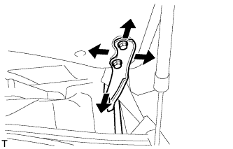 |
Adjust the hood position.
Loosen the 4 hinge bolts of the hood.
Move the hood and adjust the clearance between the hood and front fender.
Tighten the 4 hinge bolts of the hood after the adjustment.
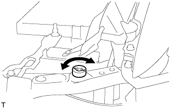 |
Adjust the cushion rubber so that the height of the hood and fender are aligned.
Adjust the hood lock.
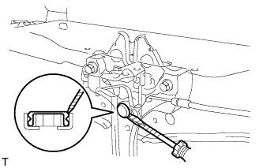 |
Using a screwdriver, remove the hood lock nut cap as shown in the illustration.
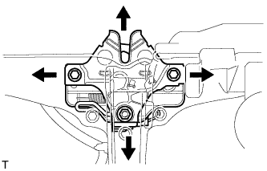 |
Loosen the 2 bolts and hood lock nut.
Adjust the hood lock position so that the striker can enter it smoothly.
Tighten the bolts and nut after the adjustment.
Install a new cap.
| 48. INSPECT COOLANT LEVEL AT RESERVOIR |
 |
Check that the engine coolant level is between the L and F lines when the engine is cold.
If the engine coolant is low, check for leaks and add "TOYOTA Super Long Life Coolant" or similar high quality ethylene glycol based non-silicate, non-amine, non-nitrite and non-borate coolant with long-life hybrid organic acid technology to the F line.